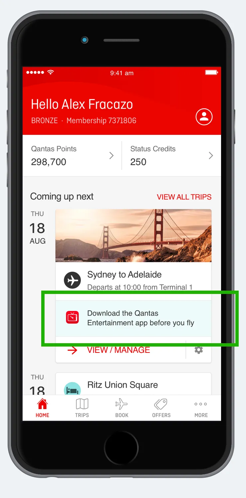

Product:
Qantas Airways App (iOS and Android)
Date:
2016
Role:
Lead Designer
How to increase app downloads by +70% by connecting entertainment services in the flagship app “Qantas Airways”


Qantas is on a mission to be the global leader in travel. One of the key factors in achieving this is to bring the entertainment experience into the top consideration for travellers to choose Qantas. The key success metric is the increased use of their entertainment app.
Qantas provides a wide range of inflight entertainment systems, using multiple providers for aircraft hardware. Traveller behaviour is moving towards bringing personal devices on board. We’ve seen more and more travellers using their personal devices to stream content as well as switch devices/systems at will.
‚Äç
Qantas already has an appealing seatback screen experience but lacks a hassle-free personal device experience. Building a better experience for entertainment using the Qantas Airways app is a great extension of the company’s mission, while managing to leverage its existing systems and providers, increase its value for customers and provide the company with another revenue stream.

I had heaps of fun working with these folks, under the Qantas Digital Direct Team. I was leading the design for the Entertainment Squad. I had also collaborated with the Travel Squad, Emerging Channels Squad, Loyalty Squad, and Smart Retail Squad.
Some known facts about Qantas product offering that is relevant for entertainment:
Focus on deeply understanding the problem by leveraging insights from other teams. I started mapping the customer journey and adding important touch points where users had an action to complete.
In addition to analysis of previous research conducted by the Qantas team including customer journeys, personas and competitor analysis, we also had free access to the Qantas Lounge to interview travellers. Here is what we found:

Travellers don’t know about the Entertainment app until they get on board the flight
A known fact for Qantas was that 35% of trips are synced or added to the "Qantas Airways app" one week before departure. Our solution hypothesis was that there is an opportunity to engage travellers through the Qantas Airways app, and this would lead to increased use of the entertainment app.
Incorporate a message about the Qantas Entertainment app in the "flight card" of the Qantas Airways app
The Qantas Entertainment app downloads from the App Store

Every week the Qantas design team holds a sparring/jam session, with the aim to understand what each designer is working on and how they are collaborating on each project, and also to establish our design experience principles used across the Qantas products. Here's how I connected those principles to the solutions presented:
Focus on primary needs without distractions
Start, continue and complete tasks across platforms
Supercharge experiences utilising channel capabilities
Give the user the right experience at the right time
One of our solutions was to identify whether users have the Qantas Entertainment App installed on their device, and if not, to surface a distraction-free notice:

The thought process for creating this "notice" was based on which model of aircraft the traveller was flying. Qantas operates a fleet of 126 aircraft: Airbus A380, Airbus A330, Boeing 737 and Boeing 787. Our team had to understand the basics to create this experience. So we considered four different situations regarding the aircraft system:
The feature needed to understand which system was available on the aircraft and also whether the user had the app installed on their device to adjust the message accordingly.

We collect the following data 24 hours after launch:
With the positive results of our experiment, we decided to launch more features that we believed could solve other user-identified pain points and also get travellers engaged and excited about their trip. We start by showing the 5 latest movies available for their flight.

We also decided to explore a page structure that would accommodate:

During this process, the Qantas Airways app was also improved by another team on the Travel Squad. This team was working hard to reduce user friction. Their objective was to surface the itinerary page on the home page so that users wouldn't need to tap on a card to see what’s important for their flight. I participated in this project indirectly, representing my team, the entertainment team, as this project would directly affect what we were working on.
This project directly benefited us when released. The entertainment design pattern I designed worked perfectly with this change, users would see what entertainment was available for their flight on the Qantas Airways app home page, which had a huge impact on our team metrics.

Beyond building a simple design pattern, we allow passengers to discover what's showing on board their next flight. This feature delivers awareness of what entertainment is available when travelling with Qantas and further strengthens the passengers’ engagement with the app and the Qantas brand.

After working many months, participating in all stages of this project —see also the redesign of Qantas Entertainment app case study, which was fundamental for the success of the business. I'm excited to see how many improvements we made as a team, creating something really exciting, and a product we are all proud of.


I’m showcasing how we’ve changed user behaviour by design and increased the booking (connection) rate on Hireup by +12%

How I’ve automated data entry and improved the experience of those applying for an Electronic Travel Authority (ETA) visa before travelling to Australia

Building more than just a product, a brand experience for Qantas Entertainment